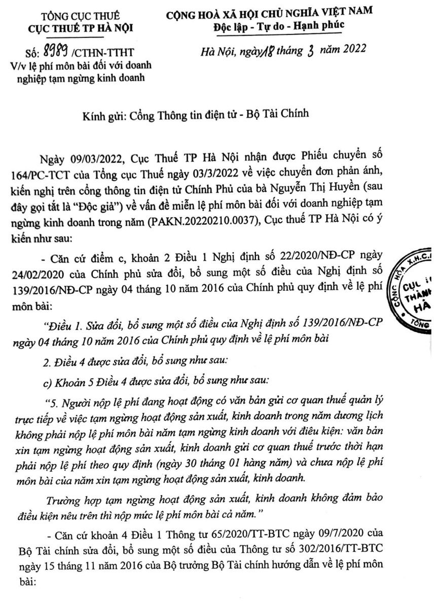
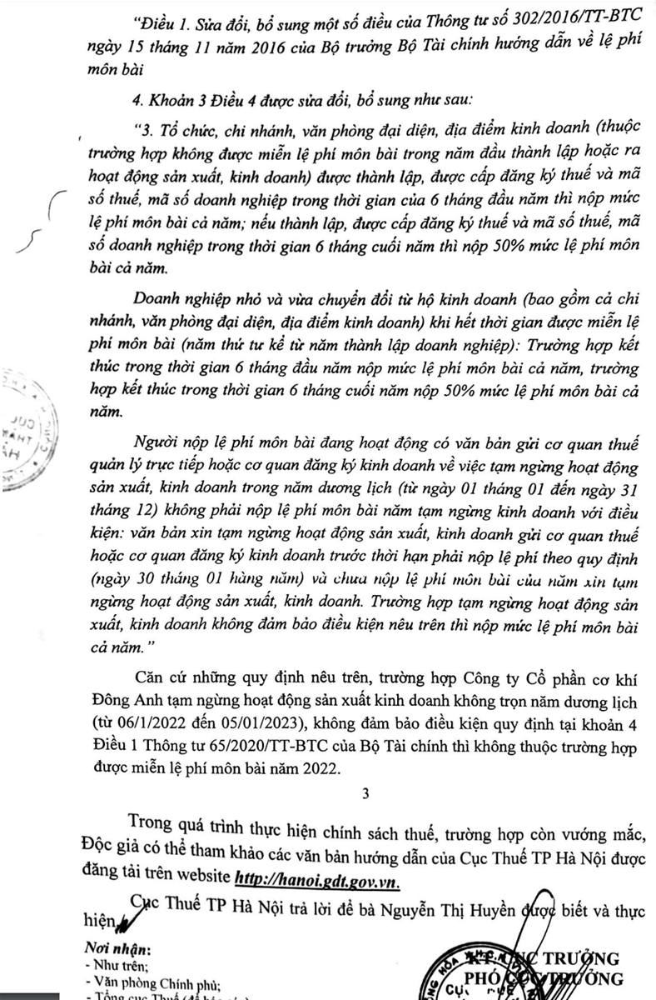

Quy định về nghĩa vụ phải nộp hoặc không phải nộp tiền thuế lệ phí môn bài khi tạm ngừng kinh doanh đang được quy định tại khoản 4 Điều 1 Thông tư số 65/2020/TT-BTC ngày 9/7/2020 của Bộ Tài chính như sau:
Người nộp lệ phí môn bài đang hoạt động có văn bản gửi cơ quan thuế quản lý trực tiếp hoặc cơ quan đăng ký kinh doanh về việc tạm ngừng hoạt động sản xuất, kinh doanh trong năm dương lịch (từ ngày 01 tháng 01 đến ngày 31 tháng 12) không phải nộp lệ phí môn bài năm tạm ngừng kinh doanh với điều kiện: văn bản xin tạm ngừng hoạt động sản xuất, kinh doanh gửi cơ quan thuế hoặc cơ quan đăng ký kinh doanh trước thời hạn phải nộp lệ phí theo quy định (ngày 30 tháng 01 hàng năm) và chưa nộp lệ phí môn bài của năm xin tạm ngừng hoạt động sản xuất, kinh doanh. Trường hợp tạm ngừng hoạt động sản xuất, kinh doanh không đảm bảo điều kiện nêu trên thì nộp mức lệ phí môn bài cả năm.
Vậy là:
Khi tổ chức (Doanh nghiệp), cá nhân, nhóm cá nhân, hộ gia đình thực hiện tạm ngừng hoạt động sản xuất, kinh doanh thì sẽ không phải nộp tiền lệ phí môn bài nếu đáp ứng được các điều kiện sau:
+ Điều kiện 1: Nộp hồ sơ xin tạm ngừng hoạt động sản xuất, kinh doanh trước ngày 30 tháng 01 của năm xin tạm ngừng
+ Điều kiện 2: Chưa nộp lệ phí môn bài của năm xin tạm ngừng
+ Điều kiện 2: Chưa nộp lệ phí môn bài của năm xin tạm ngừng
=> Còn nếu doanh nghiệp, hộ cá nhân kinh doanh mà không đáp ứng được cả 2 điều kiện nêu trên thì vẫn phải nộp mức lệ phí môn bài cả năm
Lưu ý:
Lưu ý:
Cá nhân, nhóm cá nhân, hộ gia đình đã giải thể, tạm ngừng sản xuất, kinh doanh sau đó ra kinh doanh trở lại không xác định được doanh thu của năm trước liền kề thì doanh thu làm cơ sở xác định mức thu lệ phí môn bài là doanh thu của năm tính thuế của cơ sở sản xuất, kinh doanh cùng quy mô, địa bàn, ngành nghề theo quy định tại Thông tư số 92/2015/TT-BTC ngày 15/6/2015 của Bộ trưởng Bộ Tài chính.
(Theo điểm c, khoản 3, điều 1 của Thông tư 65/2020/TT-BTC sửa đổi, bổ sung Thông tư 302/2016/TT-BTC hướng dẫn về lệ phí môn bài)
Dưới đây, công ty Kế Toán Diệu Tâm xin được cung cấp 1 vài các công văn trả lời về trường hợp "Tạm ngừng kinh doanh có phải nộp thuế môn bài không?" để các bạn tham khảo:
1. Công văn số 2351/TCT-CS ngày 9/6/2023 của Tổng cục Thuế về lệ phí môn bài khi tạm ngừng hoạt động sản xuất kinh doanh
Kính gửi: Cục Thuế tỉnh Hà Nam
Trả lời công văn số 938/CTHNA-TTHT ngày 15/7/2022 của Cục Thuế tỉnh Hà Nam về lệ phí môn bài khi tạm ngừng hoạt động sản xuất kinh doanh, Tổng cục Thuế có ý kiến như sau:- Căn cứ điểm c khoản 2 Điều 1, khoản 1 Điều 2 Nghị định số 22/2020/NĐ-CP ngày 24/02/2020 của Chính phủ sửa đổi, bổ sung một số điều của Nghị định số 139/2016/NĐ-CP ngày 04/10/2016 của Chính phủ quy định về lệ phí môn bài; - Căn cứ khoản 4 Điều 1 Thông tư số 65/2020/TT-BTC ngày 09/7/2020 của Bộ Tài chính sửa đổi, bổ sung một số điều của Thông tư số 302/2016/TT-BTC ngày 15/11/2016 của Bộ trưởng Bộ Tài chính hướng dẫn về lệ phí môn bài; - Căn cứ Khoản 2 Điều 156 Luật Ban hành văn bản quy phạm pháp luật số 80/2015/QH13 ngày 22/6/2015 của Quốc hội; Căn cứ quy định trên, trường hợp người nộp lệ phí đang hoạt động có văn bản gửi cơ quan thuế quản lý trực tiếp về việc tạm ngừng hoạt động sản xuất, kinh doanh trước ngày 30 tháng 01 hàng năm và chưa nộp lệ phí môn bài của năm xin tạm ngừng hoạt động sản xuất, kinh doanh thì không phải nộp lệ phí môn bài của năm tạm ngừng hoạt động sản xuất, kinh doanh. Tổng cục Thuế trả lời để Cục Thuế tỉnh Hà Nam biết./.
|
2. Công văn số 8989/CTHN-TTHT ngày 18/3/2022 của Cục Thuế TP. Hà Nội về lệ phí môn bài đối với doanh nghiệp tạm ngừng kinh doanh


3. Công văn số 6376/CTHN-KTNB ngày 25/2/2022 của Cục Thuế TP. Hà Nội về việc miễn lệ phí môn bài
Kính gửi: Bà Vũ Thị Hiên
Địa chỉ: CT3 Gelexia, 885 Tam Trinh, phường Yên Sở, quận Hoàng Mai, TP Hà Nội.Ngày 15/02/2022, Cục Thuế TP Hà Nội nhận được Phiếu chuyển số 99/PC-TCT ngày 11/02/2022 của Tổng cục Thuế về việc chuyển đơn phản ánh, kiến nghị trên cổng thông tin điện tử Chính phủ của bà Vũ Thị Hiên về vấn đề miễn lệ phí môn bài cho doanh nghiệp tạm ngừng kinh doanh trong năm (PAKN.20220128.0008) theo Công văn số 851/VPCP-DMDN ngày 09/02/2022 của Văn phòng Chính phủ. Về vấn đề này, Cục thuế TP Hà Nội có ý kiến như sau: Công ty TNHH tư vấn và dịch vụ Khải Dương, MST:0109277183; địa chỉ: Số 1, 157/2 Đức Giang, Thượng Thanh, Long Biên, Hà Nội là doanh nghiệp thuộc Chi cục Thuế quận Long Biên quản lý. Ngày 26/01/2022, Công ty gửi văn bản số 01/2022/CV-KD ngày 25/01/2022 đến Chi cục Thuế quận Long Biên xin tạm ngừng hoạt động SXKD và đề nghị miễn lệ phí môn bài năm 2022 đồng thời thông báo về thời gian đăng ký tạm ngừng kinh doanh với Phòng Đăng ký kinh doanh - Sở Kế hoạch và đầu tư thành phố Hà Nội từ ngày 08/01/2022 đến 08/01/2023, Công ty chưa nộp lệ phí môn bài năm 2022. Ngày 07/01/2022, Phòng Đăng ký kinh doanh - Sở kế hoạch và Đầu Tư TP Hà Nội đã có Giấy xác nhận về việc doanh nghiệp đăng ký tạm ngừng kinh doanh từ ngày 08/01/2022 đến ngày 08/01/2023. Lý do: Công ty hoạt động kinh doanh không hiệu quả nên cần tạm ngừng để chuẩn bị các điều kiện về tổ chức, nhân sự và cơ sở vật chất trong giai đoạn mới đảm bảo hoạt động kinh doanh có hiệu quả hơn. Ngày 28/01/2020, Chi cục Thuế Quận Long Biên đã có văn bản số 1855/CCT-KTNDP trả lời Công ty TNHH tư vấn và dịch vụ Khải Dương về việc nộp lệ phí môn bài, tuy nhiên Công ty không đồng ý và gửi phản ánh kiến nghị đến Văn phòng Chính Phủ, Bộ Tài Chính và Tổng cục Thuế. Tại Điểm c, Khoản 2, Điều 1, Nghị định số 22/2020/NĐ-CP ngày 24/02/2020 sửa đổi bổ sung một số điều của Nghị định số 139/2016/NĐ-CP ngày 04/10/2012 của Chính Phủ quy định về lệ phí môn bài, quy định: “- Khoản 5 Điều 4 được sửa đổi, bổ sung như sau: 5. Người nộp lệ phí đang hoạt động có văn bản gửi cơ quan thuế quản lý trực tiếp về việc tạm ngừng hoạt động sản xuất, kinh doanh trong năm dương lịch không phải nộp lệ phí môn bài năm tạm ngừng kinh doanh với điều kiện: văn bản xin tạm ngừng hoạt động sản xuất, kinh doanh gửi cơ quan thuế trước thời hạn phải nộp lệ phí theo quy định (ngày 30 tháng 01 hàng năm) và chưa nộp lệ phí môn bài của năm xin tạm ngừng hoạt động sản xuất, kinh doanh. Trường hợp tạm ngừng hoạt động sản xuất, kinh doanh không đảm bảo điều kiện nêu trên thì nộp mức lệ phí môn bài cả năm.” Tại Khoản 4, Điều 1, Thông tư số 65/2020/TT-BTC ngày 09/07/2020 sửa đổi bổ sung một số điều của Thông tư số 302/2016/TT-BTC ngày 15/11/2016 của Bộ trưởng Bộ Tài chính hướng dẫn về lệ phí môn bài, quy định: “4. Khoản 3 Điều 4 được sửa đổi, bổ sung như sau: 3. Tổ chức, chi nhánh, văn phòng đại diện, địa điểm kinh doanh (thuộc trường hợp không được miễn lệ phí môn bài trong năm đầu thành lập hoặc ra hoạt động sản xuất, kinh doanh) được thành lập, được cấp đăng ký thuế và mã số thuế, mã số doanh nghiệp trong thời gian của 6 tháng đầu năm thì nộp mức lệ phí môn bài cả năm; nếu thành lập, được cấp đăng ký thuế và mã số thuế, mã số doanh nghiệp trong thời gian 6 tháng cuối năm thì nộp 50% mức lệ phí môn bài cả năm. Doanh nghiệp nhỏ và vừa chuyển đổi từ hộ kinh doanh (bao gồm cả chi nhánh, văn phòng đại diện, địa điểm kinh doanh) khi hết thời gian được miễn lệ phí môn bài (năm thứ tư kể từ năm thành lập doanh nghiệp): Trường hợp kết thúc trong thời gian 6 tháng đầu năm nộp mức lệ phí môn bài cả năm, trường hợp kết thúc trong thời gian 6 tháng cuối năm nộp 50% mức lệ phí môn bài cả năm. Người nộp lệ phí môn bài đang hoạt động có văn bản gửi cơ quan thuế quản lý trực tiếp hoặc cơ quan đăng ký kinh doanh về việc tạm ngừng hoạt động sản xuất, kinh doanh trong năm dương lịch (từ ngày 01 tháng 01 đến ngày 31 tháng 12) không phải nộp lệ phí môn bài năm tạm ngừng kinh doanh với điều kiện: văn bản xin tạm ngừng hoạt động sản xuất, kinh doanh gửi cơ quan thuế hoặc cơ quan đăng ký kinh doanh trước thời hạn phải nộp lệ phí theo quy định (ngày 30 tháng 01 hàng năm) và chưa nộp lệ phí môn bài của năm xin tạm ngừng hoạt động sản xuất, kinh doanh. Trường hợp tạm ngừng hoạt động sản xuất, kinh doanh không đảm bảo điều kiện nêu trên thì nộp mức lệ phí môn bài cả năm.” Tại Thông tư số 65/2020/TT-BTC đã quy định việc miễn lệ phí môn bài đối với doanh nghiệp tạm ngừng hoạt động sản xuất kinh doanh phải thuộc trường hợp tạm ngừng hoạt động sản xuất, kinh doanh trong một năm dương lịch (từ 01/01 đến 31/12) và đáp ứng điều kiện: có văn bản xin tạm ngừng hoạt động sản xuất kinh doanh gửi cơ quan thuế hoặc cơ quan đăng ký kinh doanh trước thời hạn nộp lệ phí theo quy định (ngày 30 tháng 01 hàng năm); Chưa nộp lệ phí môn bài của năm xin tạm ngừng hoạt động sản xuất kinh doanh. Căn cứ hồ sơ đăng ký tạm ngừng SXKD của Công ty TNHH tư vấn và dịch vụ Khải Dương thì Công ty tạm nghỉ kinh doanh không tròn năm dương lịch 2022 (Công ty tạm ngừng SXKD từ ngày 08/01/2022) nên không thuộc đối tượng miễn lệ phí môn bài năm 2022. Công ty thuộc đối tượng nộp lệ phí môn bài cả năm theo quy định. Cục thuế TP Hà Nội trả lời để Bà Vũ Thị Hiên được biết./.
|